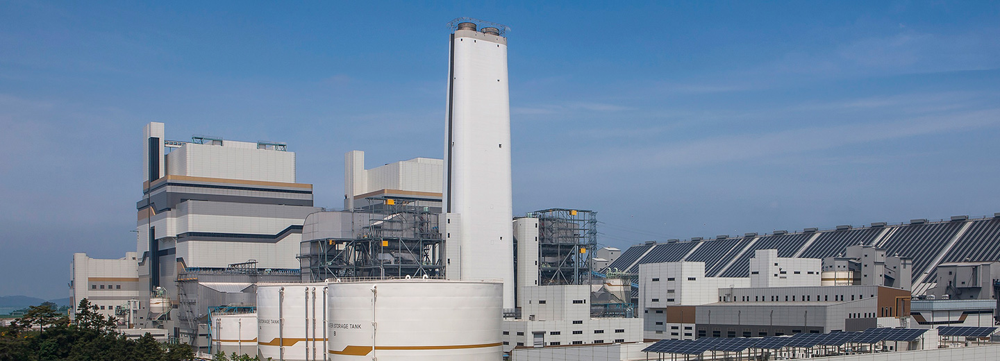

초고효율의 미래형 친환경발전소
신보령발전본부
신보령발전본부는 총 2,000MW 용량의 국내 최초 순수 국산화 기술을 적용한 초초임계압 발전소입니다. 신보령발전본부는 고효율의 USC(Ultra Super Critical) 발전소로 발전효율은 높이고 온실가스배출을 줄이는 동시에 최신의 질소산화물저감설비, 배기가스 탈황설비 등을 갖춘 친환경발전소로, 신보령 1,2호기 완공을 통해 국민에게 더욱 저렴하고 친환경적인 전기를 공급할 수 있게 되고, 최초 국산화 초초임계압 발전소의 건설 및 운영 기술력의 해외 수출을 통한 글로벌시장 판로 개척도 기대하고 있습니다.


사람과 자연을 생각하는 친환경 발전소
신보령 1,2호기는 최신의 배연탈황설비, 배연탈질설비, 전기집진기 등의 환경설비를 갖추었으며, 미세먼지 등 대기환경 개선에 대한 대응책으로 기존 설계를 변경하여 탈황설비 순환펌프의 용량을 증대하고, 탈질설비 촉매 1단을 추가 설치하며 기존 설계대비 약 68%의 대기오염물질을 추가로 감축할 예정입니다. 또한, 옥내형(실내) 저탄장을 설치하여 석탄 보관 중에 발생하는 먼지를 최소화하였고, 친환경 고연돌 등을 도입하여 대기환경에 대한 영향을 최소화하는 발전소로 운영될 예정입니다.
공기업의 사회적 책임을 다하는 지역과 함께하는 발전소
신보령발전본부는 대규모 건설사업에 지역기업들이 대거 참여토록 하여 지역경제 활성화에 앞장섰습니다. 신규 건설에 따른 552억원 규모의 특별지원사업비가 보령시로 지원되었으며, 발전소 주변지역 학교를 대상으로 각종 육영사업을 비롯한 공공복지사업 추진을 통해 매년 10억원 가량을 지원하고 있습니다. 이 외에도 주변지역 주민들을 대상으로 다양한 사회공헌 활동을 추진하며 지역사회의 발전에 기여하고 있습니다.
Asian Power awards
올해의 환경설비 수상
2019.09
2020년도 제28회
안전경영대상 수상
2020.12
종합효율 44.14%의 보일러
49% 효율의 우수한 터빈
신보령발전본부 설비현황
| 화력 | 소수력 | 태양광 | 합계 |
|---|---|---|---|
| 2,000MW | 5MW | 2.9MW | 총 2,007.9MW |